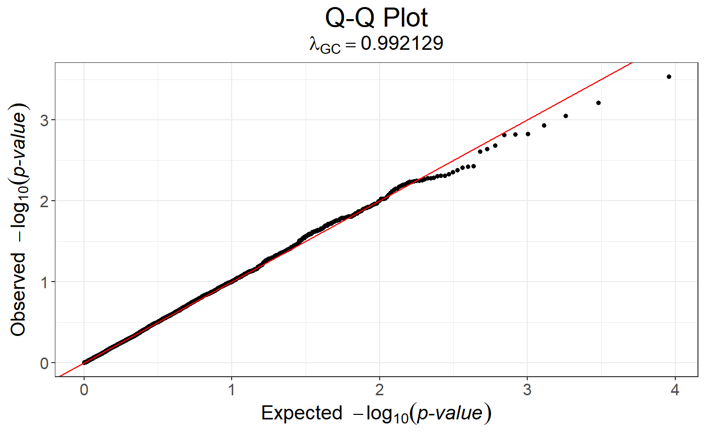
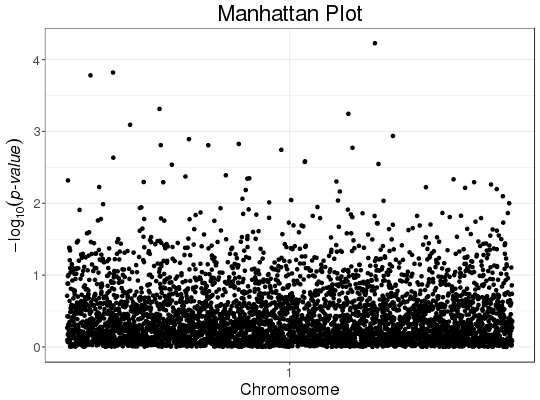

Manhattan plot
Creates a manhattan plot.
snp_manhattan(gwas, infos.chr, infos.pos, colors = c("black", "grey60"), dist.sep.chrs = 1e+07, ind.highlight = integer(0), col.highlight = "red", labels = NULL, npoints = NULL, coeff = 1)
Arguments
- gwas
- A
mhtestobject with the p-values associated with each SNP. Typically, the output of big_univLinReg, big_univLogReg or snp_pcadapt. - infos.chr
- Vector of integers specifying each SNP's chromosome.
Typically
<bigSNP>$map$chromosome. - infos.pos
- Vector of integers specifying the physical position
on a chromosome (in base pairs) of each SNP.
Typically
<bigSNP>$map$physical.pos. - colors
- Colors that used for each chromosome (they are recycled). Default is an alternance of black and grey.
- dist.sep.chrs
- "Physical" distance that separates two chromosomes. Default is 10 Mbp.
- ind.highlight
- Indices of SNPs you want to highlight (of interest). Default doesn't highlight any SNPs.
- col.highlight
- Color used for highlighting SNPs. Default uses red.
- labels
- Labels of the x axis. Default uses the number of the
chromosome there are in
infos.chr(sort(unique(infos.chr))). This may be useful to restrict the number of labels so that they are not overlapping. - npoints
- Number of points to keep (ranked by p-value) in order to get
a lighter object (and plot). Default doesn't cut anything.
If used, the resulting object will have an attribute called
subsetgiving the indices of the kept points. - coeff
- Relative size of text. Default is
1.
Value
A ggplot2 object. You can plot it using the print method.
You can modify it as you wish by adding layers. You might want to read
http://r4ds.had.co.nz/data-visualisation.html
to get more familiar with the package ggplot2.
Details
If you don't have infos of chromosome and position, you should simply
use plot instead.
Examples
set.seed(9) test <- snp_attachExtdata() G <- test$genotypes y <- rnorm(nrow(G)) gwas <- big_univLinReg(G, y) snp_qq(gwas)
# The next plot should be prettier with a real dataset snp_manhattan(gwas_gc, infos.chr = test$map$chromosome, infos.pos = test$map$physical.pos)p <- snp_qq(gwas_gc) + ggplot2::aes(text = asPlotlyText(test$map)) ## Not run: plotly::ggplotly(p, tooltip = "text")